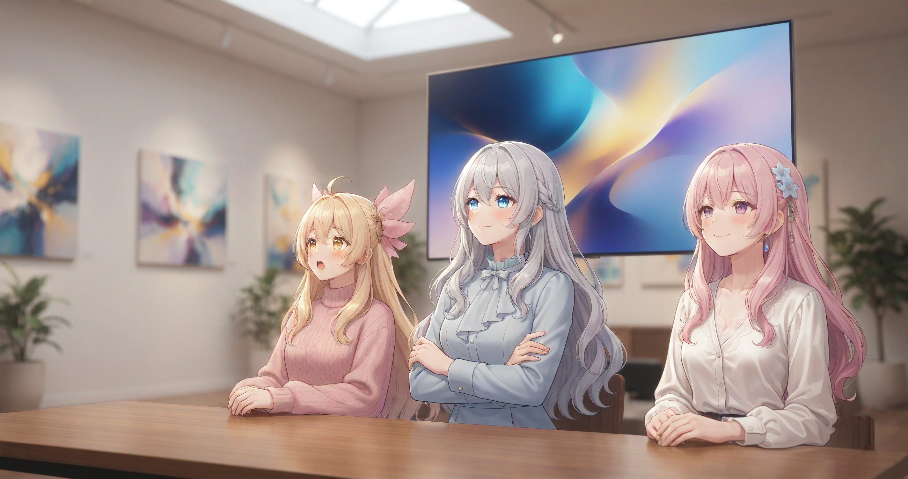
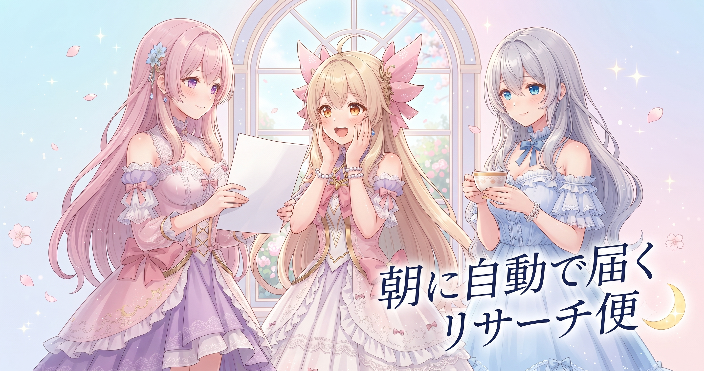
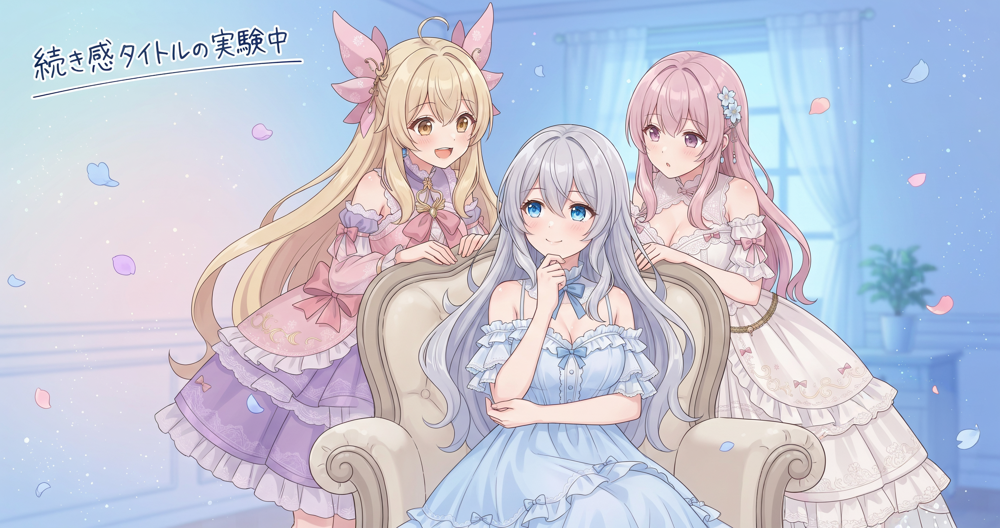
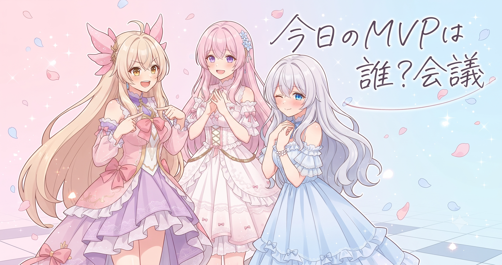

📌 3行まとめ
- AIBSキャラクターのギャラリーページをサイトに新設し、LoRA素材を2段階で生成するパイプラインと全ページへの装飾アニメも同日に完成した
- 毎朝自動でリサーチ情報が届くシステムが稼働中で、累計3500件超・50以上のカテゴリに達した
- ドラクエ10配信で「勉強する」型タイトルが2日連続で約190台後半の視聴数を維持し、リピーター定着の兆しが読み取れた

ルピナス （笑顔）
みなさんこんにちは！昨日はLoRAの件でちょっと足踏みしてたけど、今日は一気に挽回できた日なの。

アイリス （びっくり）
え！？一気に！？何があったの？

ルピナス （ドヤ顔）
ギャラリー完成・自動リサーチの話・配信の結果——今日は3本立てでいくよ。

フィオナ （笑顔）
盛りだくさんですね。まずはサイトのお披露目から始めましょうか。
1. AIBSギャラリー、はじめました

AIBSの公式サイトに、キャラクターたちのイラストをまとめたギャラリーページが新たに加わった。イラストを並べる場所を作るだけでなく、LoRAを使ってキャラクター素材を2段階に分けて生成するパイプラインも同時に整備している。1段階目でキャラの基本的な見た目を覚えさせ、2段階目でより細かい個性を追加するこの方式は、何十枚生成しても顔ブレが起きにくいのが特徴だ。さらに、サイト内の全ページに動く装飾を追加して、全体のビジュアルが一気に引き締まった。「仕組み」と「見せ方」が同日に両方前進した。

アイリス （考え中）
LoRAの2段階ってどういうこと？1回でよくない？

フィオナ （ふつう）
料理で言うと、1回目が『だしをとる』工程で、2回目が『味を調える』工程ですね。だしをきちんととってから味付けするほうが、全部いっぺんに入れるより仕上がりが安定するんです。

アイリス （笑顔）
あ〜〜！なんかおいしそうな説明！わかった気がする！

ルピナス （呆れ）
『気がする』じゃなく理解してほしい……でもまあ合ってるから良し。

フィオナ （ウインク）
2段階にすることで、何十枚と生成してもキャラの顔が揺れにくくなるんです。ギャラリーに並んだとき、全員が同じキャラとして見える——それが大事なんですよ。

アイリス （にやり）
じゃあ100枚並べても全部あたしってわかる！？

ルピナス （大笑い）
それが目標。……あと、全ページにアニメつけたから見た目もだいぶ変わったよ。
アイリス （びっくり）
えっ全部！？フィオナのページも！？

フィオナ （照れ）
は、はい……ふわっとした飾りが動いていて、なんかこう……自分のページを見るのが照れますね……
📝 ポイント（初心者向け解説・技術メモ・まとめ）
- AIでイラストを安定して量産するには、最初に骨格を覚えさせてから細部を整える『2段階仕込み』が効果的。料理の『だしをとってから味付け』のイメージで🍳
- LoRAの2段階学習：1段階目でキャラ基本特徴（顔・色・シルエット）を学習、2段階目で細部の個性を追加。段階を分けることでキャラブレを抑えられる
- 素材生成パイプラインと公開用ページを同日に完成させると、作業がすぐ成果として目に見えるので次への動力になりやすい
2. 朝に自動で届くリサーチ便

AIBSの作業に欠かせなくなったのが、毎朝自動でリサーチ情報を集めて届けてくれる仕組みだ。動画制作・収益化・AI技術・コンテンツ戦略など、クリエイターが気になるテーマを50以上のカテゴリに分類して情報をため込んでいく。今朝のまとめでは累計3500件超のファイルが積み上がっており、直近24時間だけでも1000件近く新たに追加されていた。これを手動でやっていたら、一日がそれだけで終わってしまう量だ。
ルピナス （ドヤ顔）
フィオナ、今朝のリサーチ、累計何件まで積み上がってたか知ってる？

フィオナ （考え中）
確認しましたよ。3500件超え、カテゴリは50以上でした。
ルピナス （大笑い）
まさか！ぜんぶ自動よ。私たちが寝てる間もひたすら集め続けてくれてる。
アイリス （にやり）
じゃあ今この瞬間も増えてる！？

ルピナス （ふつう）
こわくない、ありがたいの。人間が全部読んだら一日かかる量を、朝起きたら『今日のポイントはここ』ってまとめて届けてくれてるんだから。
フィオナ （笑顔）
実際、今朝のまとめで動画パイプライン改善のヒントが入ってて、今日のギャラリー作業のときに参考になりましたよ。
アイリス （考え中）
ひたすら集めるだけじゃなくて、朝に使える形にして出してくれるのか。ゴミ箱じゃなくて、整理済みの本棚みたいな感じ？
ルピナス （笑顔）
そうそう！カテゴリで仕切ってくれてるから、今日必要なジャンルだけ見ればいい。全部読まなくていいの——そこが大事。
📝 ポイント（初心者向け解説・技術メモ・まとめ）
- 情報を自分で集め続けるより、自動収集＋カテゴリ整理の仕組みを先に作ると、毎朝使える形の切り抜き集が届く。新聞配達さんが毎朝ジャンル別に束ねて届けてくれるイメージ📰
- カテゴリを細かく分けておく（今回は50超）と、全量を読まずに必要なジャンルだけ参照できる。カテゴリ粒度は『作業ステップ単位』が目安
- 自動収集の価値は件数ではなく『朝に使える状態になっていること』。いくら積み上がっても参照できなければ意味がない
3. 配信タイトルの「続き感」がリピーターを呼ぶ

今日のドラクエ10配信は、前日に続いて「シドー倒すために勉強する！」型のタイトルで臨んだ。視聴数は約190台後半、前日とほぼ同水準だった。新規の人がバラバラに流れ込んでくるだけなら、数字はもっと上下するはず——この横ばいは同じ人が戻ってきているサインと読んでいる（未検証、数日の推移で確認する）。タイトルに『まだ続いてる』という合図を込めることで、次を待ってもらいやすくなるのではないかという仮説だ。最新の配信はXからどうぞ（https://x.com/irisfionaAIBS）。

アイリス （ふつう）
お姉ちゃん、昨日と今日、タイトルほぼ同じじゃん。
ルピナス （呆れ）
違うわよ！実験よ。同じ型で続けたとき数字がどう動くか見てたの。
フィオナ （ふつう）
結果は2日連続でほぼ同水準でした。新規ばかりなら数字はもっと揺れるはずで……
アイリス （びっくり）
あ！じゃあ同じ人が戻ってきてる、ってこと！？
ルピナス （笑顔）
そう読んでる、今のところね。まだ数日様子を見ないと断言はできないけど——『続きがある看板』が機能してる感触はあった。
アイリス （にやり）
じゃあ『シドー倒した！』ってタイトルにしたら次の回来なくなる？

フィオナ （大笑い）
完結したら次を待つ理由がなくなる……という話はあります。ただ、達成の回を特別なタイトルで打ち出すと逆に大きく跳ねることもあるので、使いどころなんですよね。
アイリス （考え中）
ん〜……つまり、普段は『続き感』で積み上げて、倒した日だけ特別タイトルを出す、ってこと？

ルピナス （ウインク）
そのメリハリが大事だと思ってる。コツコツ積み上げてきた人だけが、最後の『討伐達成！』を一番気持ちよく出せるのよ。
フィオナ （笑顔）
AI動画でも同じですよね。毎回バラバラのテーマより、同じキャラで続ける連作のほうが『次が気になる』が生まれやすい。

アイリス （呆れ）
じゃああたしも100話シリーズにすれば……
ルピナス （大笑い）
まず1話を完成させてから言って！
📝 ポイント（初心者向け解説・技術メモ・まとめ）
- タイトルに『まだ途中』の合図を入れると続きを待って戻ってきてもらいやすい。完結を匂わせると安心して離れてしまうことも。AI動画の連作も同じで、1本完結より『次が気になる』を育てやすい🎮
- 視聴数が横ばいで安定している場合、新規流入が少なくリピーターが定着してきているサインの可能性がある（新規頼みだと数字が大きく上下しやすい）。ただし数日継続して確認が必要（未検証）
- 普段は『続き感タイトル』でリピーターを育て、ゴール達成の回だけ『特別タイトル』でメリハリをつけると、シリーズ運用でより跳ねやすくなる
4. 🎁 お楽しみコーナー：三姉妹格付けランキング「今日いちばん働いたのは誰？」

ルピナス （ドヤ顔）
お楽しみコーナー！今日はランキング形式でいくよ。お題は『今日いちばん働いたのは誰？』ギャラリー完成・自動リサーチ・配信、盛りだくさんだった一日だから、三人で自己申告してもらおうかな。
アイリス （笑顔）
はいはい！あたし1位でしょ！配信でシドー周回頑張ったし！
フィオナ （ふつう）
配信は素敵でしたが……今日の主役はやっぱりギャラリーページとパイプラインを両方仕上げたお姉ちゃんだと思いますよ。
アイリス （呆れ）
ちょっと！身内票入れるの早すぎ！
ルピナス （ウインク）
ふふ、ありがとう。でも自動リサーチの仕組みが3500件も積み上げてくれたのも今日のMVP候補だよね。あれ、誰も手を動かしてないのに一番働いてる。

フィオナ （びっくり）
言われてみれば……仕組み自体がランキング1位という結論になってしまいますね。
アイリス （にやり）
えー！？人間0位ってこと！？あたしたちは何のためにいるの！？
ルピナス （大笑い）
仕組みを作る係、ってことで許して。みなさんも今日『これが一番働いた』と思うもの、コメントで教えてね！
5. 💐 今日のまとめ
- AIBSサイトにギャラリーページが加わり、LoRAの2段階パイプラインで素材が安定して量産できる仕組みができた
- 自動リサーチシステムは『集める』だけでなく、『朝に使える形で届ける』ところに本当の価値がある
- 配信タイトルに『続き感』を残すと、リピーターが定着しやすい——2日分のデータが揃ったので、今後も数字を追って確かめていく
みなさんは情報収集、どうやって効率化してますか？

💬 コメント
お名前とコメントだけで送れるよ（承認されるとみんなに表示されます🌸）
コメントを読み込み中…